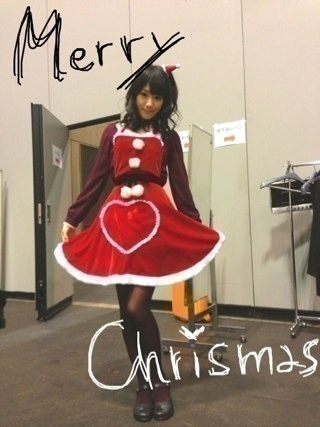
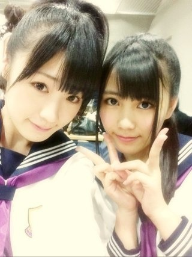

2012/1224Mon（´-`）.｡oO(かずみん×124
12月24日☆.°

いつも応援ありがとうございます！
昨日は名古屋の個別握手会
そして今日は京都の全国握手会
でした＼(^o^)／
来てくださったみなさん、
ありがとうございました！
久しぶりにみなさんに会えて
とても嬉しかったです(#^v^#)
みなさんの笑顔にも
また心が癒されました！
本当にありがとう！
乃木どこでもサンタ企画を
やらせていただいたのですが、
もう高山サンタはみなさんに
沢山の暖かい言葉のプレゼントを
もらえて感激でした(T_T)
やさしさなら間に合ってる
全握ライブで今日
初披露させていただきました^ ^
歌割に合わせてポジションが
沢山変わるので、楽しいです！
また披露したいな♪
やっぱりライブは楽しい＼(^o^)／
-------
今日のレーンは飴と鞭コンビ＊

ひなちゃんとは
昨日のお部屋も一緒でした(*^^*)！
いいコンビです♪
---------
もうすぐZEPPライブ！
リハで大忙しです！
みなさんにもらったパワーで
ガジ頑張りますよ(^o^)
ライブ楽しみだなぁー！
カキフライ食べたいなぁー！笑
それでは、
今日もお疲れ様でした☆
ありがとうございました！
2012/12/24 19:12
コメント(418)
ヤッシーです(^-^)v
色んな事情があって、行けなかった…
お疲れ様!!
へばっまずな(^-^)/~~
色んな事情があって、行けなかった…
お疲れ様!!
へばっまずな(^-^)/~~
かずみんお疲れ！(^_^)/
ライブめっちゃよかった(*^^*)
かずみん可愛いかった！(>_<)
ライブめっちゃよかった(*^^*)
かずみん可愛いかった！(>_<)
握手会うらやましい！！
27日が待ち遠しくて。
パワーもらいにいくよ！！！
27日が待ち遠しくて。
パワーもらいにいくよ！！！
今日はお疲れ様でした。
ってか俺がやまとまと推しだと思われていたとは（笑）
深川麻衣推しだから要チェックね！
ってか俺がやまとまと推しだと思われていたとは（笑）
深川麻衣推しだから要チェックね！
かずみんはフライドチキンよりカキフライ派？ 子供相手にも１人奮闘したかずみんサンタは面白かった、やっぱ誰かが本気でやらないとね…
握手会お疲れ様でした。
乃木坂ってどこ？みました。
乃木坂サンタきて欲しいなぁ！
なぁーんてね！
今度の全国握手会は、いきます。
絶対に！
今日は、本当にお疲れ様でした。
カキフライ僕も好きです。
この前食べました。
この前食べました。
かずみん(((o(*ﾟ▽ﾟ*)o)))
陽菜ちゃんのペアがかずみんで
よかった！ありがとー♡♡
かずみんから質問してくれたりして
めっちゃ、嬉しかった！
またかずみん行くなあ∩^ω^∩
今日はありがとー(((o(*ﾟ▽ﾟ*)o)))
かずみさん、お疲れ様。
本当にこの2日間ありがとう。
めちゃくちゃ楽しかった。
かずみんサンタ可愛かった。
かずみさんに肘触られて真のかずみさん推しになれた気がする。
大好きだー。
本当にこの一年かずみさんに会えてよかった。
楽しかった。
詳しくは、手紙に書くね。
来年もよろしくお願いします。
ライブ楽しみにしてる。
かずみさん、歌ってる姿が大好き
本当にこの2日間ありがとう。
めちゃくちゃ楽しかった。
かずみんサンタ可愛かった。
かずみさんに肘触られて真のかずみさん推しになれた気がする。
大好きだー。
本当にこの一年かずみさんに会えてよかった。
楽しかった。
詳しくは、手紙に書くね。
来年もよろしくお願いします。
ライブ楽しみにしてる。
かずみさん、歌ってる姿が大好き
乃木坂どこで幼稚園の子が
アメージングとかやってるのを見て
とっても微笑ましく思った。
ライブ行けないけど
成功祈ってるよ
優しさなら間に合ってる
いい曲だから生で聞きたいなあー
アメージングとかやってるのを見て
とっても微笑ましく思った。
ライブ行けないけど
成功祈ってるよ
優しさなら間に合ってる
いい曲だから生で聞きたいなあー
かずみんこんばんは＊
握手会お疲れ様でしたー
いつか行きたいと思うのでその時はよろしくね！！
Ｚｅｐｐライブ昼公演に参加しまーす♪
生かずみん楽しみにしてるね＊
夢でサンタかずみんにあえますよーに
かずみんサンタ
九州きてよ～(泣)
九州きてよ～(泣)
こんばんわ( ´ ▽ ` )ﾉ
優しさなら間に合ってるのかずみんの歌声めっちゃすきやわ♪
握手会も最高に楽しかったしお疲れ〜い！
優しさなら間に合ってるのかずみんの歌声めっちゃすきやわ♪
握手会も最高に楽しかったしお疲れ〜い！
かずみん一月にあいにくぜぜぜぜぜーい！
ライブと握手会お疲れ様ですっ(≧∀≦)
カキフライ、今たべたよっ(笑)
かずみんサンタ可愛い！
カキフライ、今たべたよっ(笑)
かずみんサンタ可愛い！
おっす
握手会おつかれー
今度のZeppライブ行くから！
あと2日、頑張って(≧∇≦)
ポジピース！
ほなまた
握手会おつかれー
今度のZeppライブ行くから！
あと2日、頑張って(≧∇≦)
ポジピース！
ほなまた
いぇーい 京都全握楽しかったよ(^-^)v
アメイジングヽ(´▽`)/
ライブと握手会お疲れ様ですっ(≧∀≦)
カキフライ、今たべたよっ(笑)
かずみんサンタ可愛い！
カキフライ、今たべたよっ(笑)
かずみんサンタ可愛い！
一実さん、お疲れ様。
ちょっと早いけど、今年一年ありがとう。
一実さんに出会えてめっちゃ楽しかったよ。ほんと感謝してる。
今日言い忘れたけど、Zeppの昼の方行くね。
ちょっと早いけど、今年一年ありがとう。
一実さんに出会えてめっちゃ楽しかったよ。ほんと感謝してる。
今日言い忘れたけど、Zeppの昼の方行くね。
カキフライはおいしいねー！
アメイジングヽ(*´▽)ノ♪
皆さんしてくれてましたね(*^^*)
ケガに気を付けてリハ頑張ってください(>_<)応援してます！
皆さんしてくれてましたね(*^^*)
ケガに気を付けてリハ頑張ってください(>_<)応援してます！
ス、スペルが、、、Christmasだよー(*･ω･)ﾉ
優しさなら間に合ってる
マジで最高やったよ*\(^o^)/*
握手もすごいよかった（＾ω＾）
言おうと思ってたことわからんなったし(￣ー￣)
また握手しにいきたいな
マジで最高やったよ*\(^o^)/*
握手もすごいよかった（＾ω＾）
言おうと思ってたことわからんなったし(￣ー￣)
また握手しにいきたいな
かずみん(=^x^=)
ミニライブたのしかったぁ(￣ー￣)
かずみん、さいこーっ！
カキフライもいいけどチキンも美味しいよ‼
ライブ行くよーっ(((o(*ﾟ▽ﾟ*)o)))
リハーサルファイト(^O^)／
ミニライブたのしかったぁ(￣ー￣)
かずみん、さいこーっ！
カキフライもいいけどチキンも美味しいよ‼
ライブ行くよーっ(((o(*ﾟ▽ﾟ*)o)))
リハーサルファイト(^O^)／
お疲れ！
かずみサンタやべーーー！！！
Zepp行くから（笑）
明日25日俺の誕生日なんだ！
祝ってね（笑）
かずみサンタやべーーー！！！
Zepp行くから（笑）
明日25日俺の誕生日なんだ！
祝ってね（笑）
ポジピースV(^_^)V ←ちょっとはまったかも
いやー乃木どこ？に出てるかずみんほんと好きだわ
なんか自分がイライラしてたりちょっと暗い気持ちになっている時に乃木どこ？でかずみんをみると面白いしなんか自然に笑顔がこぼれるよ ←これ本当だからね
だからかずみんの影響力って凄いなーって思った
声はオーディションの時に戻してほしいな（笑）
かずみんが訪れたWさゆりのお父さんかずみん推しだったんだね
いやー乃木どこ？に出てるかずみんほんと好きだわ
なんか自分がイライラしてたりちょっと暗い気持ちになっている時に乃木どこ？でかずみんをみると面白いしなんか自然に笑顔がこぼれるよ ←これ本当だからね
だからかずみんの影響力って凄いなーって思った
声はオーディションの時に戻してほしいな（笑）
かずみんが訪れたWさゆりのお父さんかずみん推しだったんだね
Zepp東京行きます♪
楽しみにしてます!
かずみんのサンタめっちゃ可愛い♪
握手会も楽しみにしてます!!
話すこと決めておかなきゃ(^-^)
またコメントしますね！
アメイジングヽ(・∀・)ノ
楽しみにしてます!
かずみんのサンタめっちゃ可愛い♪
握手会も楽しみにしてます!!
話すこと決めておかなきゃ(^-^)
またコメントしますね！
アメイジングヽ(・∀・)ノ
カキフライおいしいー！
お疲れ様！
1月6日はいくね！
1月6日はいくね！
かわごとのコンビメチャメチャおもろかったで！！
アメージングやってくれたし最高でした！
ライブも最高やったし、人生で一番良かったかも！
ありがとう！
アメージングやってくれたし最高でした！
ライブも最高やったし、人生で一番良かったかも！
ありがとう！
かずみん、握手会お疲れさま(・ω・)ノ☆
サンタのかずみんかわいいですっ！
サンタのかずみんかわいいですっ！
1月5日の全握行きます!!
かずみーん 握手会行きたかった
握手会行きたかった 北海道だから行けない
北海道だから行けない でもかずみんのブログ読めたから元気でました
でもかずみんのブログ読めたから元気でました
お疲れ様です！！
メリークリスマス＼(^o^)／
握手会行けなかった( ; _ ; )
高山サンタ可愛すぎてやばいです(≧∇≦)
やさしさなら間に合ってる初披露だったんだー行きたかったな( ; _ ; )
リハ頑張って(っ`･ω･´)っﾌﾚｰｯ!ﾌﾚｰｯ!
カキフライ俺も食べたいw
ではー(￣^￣)ゞ
メリークリスマス＼(^o^)／
握手会行けなかった( ; _ ; )
高山サンタ可愛すぎてやばいです(≧∇≦)
やさしさなら間に合ってる初披露だったんだー行きたかったな( ; _ ; )
リハ頑張って(っ`･ω･´)っﾌﾚｰｯ!ﾌﾚｰｯ!
カキフライ俺も食べたいw
ではー(￣^￣)ゞ
こんばんはー＼(^o^)／
どうも、
いくちゃんレーンに並んでたら
かずみんに釣られた者です(笑)
いやー
まさかあんなかずみんレーン
行くと思わなかったわ(´∀｀)笑
今日はありがとうございました！
北海道きてね！(*^^*)笑
ではでは♪
高山サンタ可愛すぎる！
ZEEP ライブ楽しみにしてるね♪
かずみんのダンスが大好き!
(´・ω・`)
ZEEP ライブ楽しみにしてるね♪
かずみんのダンスが大好き!
(´・ω・`)
こんばんは。
握手会、ミニライブ盛り上がったようでなによりです。
アメイジングも子供たちに流行ってるみたいで良かったね。
かずみんがパワーを充電したようにファンもいつもかずみんの笑顔に元気をもらっているので、年末年始の忙しいのも乗り切れるってもんですよ。
かずみんもライブリハとか頑張ってくださーい。
カキフライ、たぁーんと召し上がるが良いよ、
じゃあまたね。
握手会、ミニライブ盛り上がったようでなによりです。
アメイジングも子供たちに流行ってるみたいで良かったね。
かずみんがパワーを充電したようにファンもいつもかずみんの笑顔に元気をもらっているので、年末年始の忙しいのも乗り切れるってもんですよ。
かずみんもライブリハとか頑張ってくださーい。
カキフライ、たぁーんと召し上がるが良いよ、
じゃあまたね。
握手会お疲れ様(*^^*)
今日初めてかずみんのレーンいったんやけどしゃへてみてかずみんの面白さにアメイジング～♪＼(^^)／やったよ！
いつかカキフライの美味しさについて語ろう！笑
名古屋の個別1部いけて、
また、かずみさんに
会えて嬉しかったです！
少ししかお話しできなかった
けど、それでも嬉しかった
です(*´-`) また、絶対に
会いに行きます！
高山サンタさん。ありがとう♪
また、かずみさんに
会えて嬉しかったです！
少ししかお話しできなかった
けど、それでも嬉しかった
です(*´-`) また、絶対に
会いに行きます！
高山サンタさん。ありがとう♪
サンタのコスプレめっちゃ似合ってます(*^^*)
Zeppライブ行きます！(*^^*)
またリストバンド着けていきます！(*^^*)
頑張って下さい！(*^^*)
Zeppライブ行きます！(*^^*)
またリストバンド着けていきます！(*^^*)
頑張って下さい！(*^^*)
ただいまー！！
さっき家に帰って来たよ(・ω・)
一実も今東京に向かって帰ってるのかな？？
取りあえずお疲れ様！！
いつも面白くない話を聞いてくれて
ありがとう(照)
まさに今日の全握はさおり得レーン(照)
同じ部屋とか先にゆってよ！！←
USJのお土産は陽菜とのペアストラップに
するので仲良く付けといてくださおりん(照)
今日はゆっくり休んでね。
さっき家に帰って来たよ(・ω・)
一実も今東京に向かって帰ってるのかな？？
取りあえずお疲れ様！！
いつも面白くない話を聞いてくれて
ありがとう(照)
まさに今日の全握はさおり得レーン(照)
同じ部屋とか先にゆってよ！！←
USJのお土産は陽菜とのペアストラップに
するので仲良く付けといてくださおりん(照)
今日はゆっくり休んでね。
今日の握手会行ったよ(≧∀≦)
やさしさなら間に合ってるとっても良かったよ(^o^)
かずみんの自己紹介やっぱり面白い(^_^)/
今度の京都の個別行くね(≧∀≦)
それまでまってて～
今日の牡蠣フライたべたよ
やっぱり牡蠣フライおいしかった(≧∀≦)
やさしさなら間に合ってるとっても良かったよ(^o^)
かずみんの自己紹介やっぱり面白い(^_^)/
今度の京都の個別行くね(≧∀≦)
それまでまってて～
今日の牡蠣フライたべたよ
やっぱり牡蠣フライおいしかった(≧∀≦)
かずみぃぃぃぃぃぃいいいん＼(^o^)／
名古屋＆京都お疲れ様(｡≧ω≦)ﾉ
今回初遠征で、変に緊張したけどかずみんに会えて元気もらえたっっ！！！
しかも3部はあの髪型にしてくれてっ(*≧ω≦*)
ほんと嬉しかった
ほんと遠征してよかった！！！！
あんなテンション上がったの久々だわ（笑）
やっぱかずみしかーーーーー！！←
なーちゃんともお揃いだったんだよね！
昨日は少なかったけどほぼかずみんだけでなーちゃんの券無かったから見れなかった＞＜
でも本当にありがとう≡(/*@д@)/
高山推しでよかった！
写メも3部のときのやつでかわわ～
また髪型迷ったらやってみてね！
あ、もうちょっとだけ束ねる髪多くするともっといいかも♪♪
27日は夜公演いくよ！
楽しみやーーー
いくちゃん推しの人と行くから真ん中目かも知れないけどよろしくねっ！！
じゃあ今年もあと少し！
最後まで体調に気を付けて最高の年末にしましょう( ´ ▽ ` )ﾉ
☆☆☆(なお・ω・やん)☆☆☆
名古屋＆京都お疲れ様(｡≧ω≦)ﾉ
今回初遠征で、変に緊張したけどかずみんに会えて元気もらえたっっ！！！
しかも3部はあの髪型にしてくれてっ(*≧ω≦*)
ほんと嬉しかった
ほんと遠征してよかった！！！！
あんなテンション上がったの久々だわ（笑）
やっぱかずみしかーーーーー！！←
なーちゃんともお揃いだったんだよね！
昨日は少なかったけどほぼかずみんだけでなーちゃんの券無かったから見れなかった＞＜
でも本当にありがとう≡(/*@д@)/
高山推しでよかった！
写メも3部のときのやつでかわわ～
また髪型迷ったらやってみてね！
あ、もうちょっとだけ束ねる髪多くするともっといいかも♪♪
27日は夜公演いくよ！
楽しみやーーー
いくちゃん推しの人と行くから真ん中目かも知れないけどよろしくねっ！！
じゃあ今年もあと少し！
最後まで体調に気を付けて最高の年末にしましょう( ´ ▽ ` )ﾉ
☆☆☆(なお・ω・やん)☆☆☆
かずみん、一枚目の写真とっても可愛いね！
髪の毛、下ろしてる方が好きだなー。
(*´ω｀*)(*´ω｀*)
髪の毛、下ろしてる方が好きだなー。
(*´ω｀*)(*´ω｀*)
かずみーーーん！ヽ(^0^)ﾉ
今日も世界一可愛いね！
乃木どこ見たよ
サンタ可愛いくて泣いたよ｡ﾟ(ﾟ´Д｀ﾟ)ﾟ｡
やさしさなら間に合ってる
早くみたいなぁ(v_v)
幕張でもやるのかな？
渋谷ブルースもいいなぁ
会場で号泣してる人いたら間違いなく
俺だな(T_T)
飴と鞭コンビは幕張がよかったなぁ
(ﾜｶﾞﾏﾏσ(^_^;)
っっと、次はZeppだぁガジ楽しみ(^皿^)
あーー早くかずみんに会いたい(>.<)
らびゅ！
今日も世界一可愛いね！
乃木どこ見たよ
サンタ可愛いくて泣いたよ｡ﾟ(ﾟ´Д｀ﾟ)ﾟ｡
やさしさなら間に合ってる
早くみたいなぁ(v_v)
幕張でもやるのかな？
渋谷ブルースもいいなぁ
会場で号泣してる人いたら間違いなく
俺だな(T_T)
飴と鞭コンビは幕張がよかったなぁ
(ﾜｶﾞﾏﾏσ(^_^;)
っっと、次はZeppだぁガジ楽しみ(^皿^)
あーー早くかずみんに会いたい(>.<)
らびゅ！
2日間握手会お疲れ～！
どっちも行ったよ☆
今日はひかるんと連番で行ったよ(笑)
今度のZeppライブ楽しみにしてるね！
明日はゆっくり休んでね♪
おやすみ＼(^o^)／
どっちも行ったよ☆
今日はひかるんと連番で行ったよ(笑)
今度のZeppライブ楽しみにしてるね！
明日はゆっくり休んでね♪
おやすみ＼(^o^)／
２日間お疲れ様(^-^)
久しぶりに話せてよかった！
サンタコスの帽子の小ささな(笑)
今日の全握も川後さんに色々かずみのこと聞けてよかった(笑)
次は27日のライブ！
明日もリハだろうけどあまり無理せずがんばれ(^.^)
楽しみにしてる^^
久しぶりに話せてよかった！
サンタコスの帽子の小ささな(笑)
今日の全握も川後さんに色々かずみのこと聞けてよかった(笑)
次は27日のライブ！
明日もリハだろうけどあまり無理せずがんばれ(^.^)
楽しみにしてる^^
昨日、今日ありがとう♪
なーちゃんレーンにいる時に見られてたんだ(￣▽￣;)
まいやん、さゆりん、ななみん、まいまい、なーちゃんレーンにはよく出没するよ(^3^)
もちろん、かずみんレーンにも行くけどね(*^^*)
他にも何人か・・・。(笑)
他のメンバーにも見たよって言われたよ(゜ロ゜;
結構見てるんだね(￣▽￣;)
俺は誰推しと見られてるんだろうσ(^_^;)?
来年も行くからよろしくね(^o^)v
なーちゃんレーンにいる時に見られてたんだ(￣▽￣;)
まいやん、さゆりん、ななみん、まいまい、なーちゃんレーンにはよく出没するよ(^3^)
もちろん、かずみんレーンにも行くけどね(*^^*)
他にも何人か・・・。(笑)
他のメンバーにも見たよって言われたよ(゜ロ゜;
結構見てるんだね(￣▽￣;)
俺は誰推しと見られてるんだろうσ(^_^;)?
来年も行くからよろしくね(^o^)v
かずみん
お疲れー
お台場は
かずみん素晴らし過ぎた
キラキラしてたしさ
何よりキレイだったよ
圧倒された
久しぶりの
握手も楽しかったよー
ありがとう
ライブはかずみんの
普段の努力が見れて
安心した
やまちゃんは今横浜らへん
京都で八ッ橋買ってさw
帰宅中
明日は仕事
ネガティブやわー
あとひなちゃんに
謝っといてー
傷付けてないか心配やー
あと、明日もレッスンらしいやん
大変やなー
人気者はさー
忙しい中
こうして
ブログを書いてくれる
かずみんにいつも
感謝しています
ありがとう
さっきガストでカキフライを
食べなかったら
きらちゃんに怒られました
そんな僕を真下に見てくださいw
Zeppのライブ
昼夜いきまふよー
じゃあ
かずみん
体調壊さないようにねー
あと
サンタコスてか
エプロンだよねw
アメイジングーw
ポジティブかずみん
お疲れー
お台場は
かずみん素晴らし過ぎた
キラキラしてたしさ
何よりキレイだったよ
圧倒された
久しぶりの
握手も楽しかったよー
ありがとう
ライブはかずみんの
普段の努力が見れて
安心した
やまちゃんは今横浜らへん
京都で八ッ橋買ってさw
帰宅中
明日は仕事
ネガティブやわー
あとひなちゃんに
謝っといてー
傷付けてないか心配やー
あと、明日もレッスンらしいやん
大変やなー
人気者はさー
忙しい中
こうして
ブログを書いてくれる
かずみんにいつも
感謝しています
ありがとう
さっきガストでカキフライを
食べなかったら
きらちゃんに怒られました
そんな僕を真下に見てくださいw
Zeppのライブ
昼夜いきまふよー
じゃあ
かずみん
体調壊さないようにねー
あと
サンタコスてか
エプロンだよねw
アメイジングーw
ポジティブかずみん


27日楽しみだぁー♪